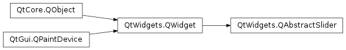

QAbstractSlider¶
Inherited by: QSlider, QDial, QScrollBar
Synopsis¶
Functions¶
- def
hasTracking() - def
invertedAppearance() - def
invertedControls() - def
isSliderDown() - def
maximum() - def
minimum() - def
orientation() - def
pageStep() - def
repeatAction() - def
setInvertedAppearance(arg__1) - def
setInvertedControls(arg__1) - def
setMaximum(arg__1) - def
setMinimum(arg__1) - def
setPageStep(arg__1) - def
setRepeatAction(action[, thresholdTime=500[, repeatTime=50]]) - def
setSingleStep(arg__1) - def
setSliderDown(arg__1) - def
setSliderPosition(arg__1) - def
setTracking(enable) - def
singleStep() - def
sliderPosition() - def
triggerAction(action) - def
value()
Virtual functions¶
- def
sliderChange(change)
Slots¶
- def
setOrientation(arg__1) - def
setRange(min, max) - def
setValue(arg__1)
Signals¶
- def
actionTriggered(action) - def
rangeChanged(min, max) - def
sliderMoved(position) - def
sliderPressed() - def
sliderReleased() - def
valueChanged(value)
Detailed Description¶
The
PySide2.QtWidgets.QAbstractSliderclass provides an integer value within a range.The class is designed as a common super class for widgets like
PySide2.QtWidgets.QScrollBar,PySide2.QtWidgets.QSliderandPySide2.QtWidgets.QDial.Here are the main properties of the class:
PySide2.QtWidgets.QAbstractSlider.value(): The bounded integer thatPySide2.QtWidgets.QAbstractSlidermaintains.PySide2.QtWidgets.QAbstractSlider.minimum(): The lowest possible value.PySide2.QtWidgets.QAbstractSlider.maximum(): The highest possible value.PySide2.QtWidgets.QAbstractSlider.singleStep(): The smaller of two natural steps that an abstract sliders provides and typically corresponds to the user pressing an arrow key.PySide2.QtWidgets.QAbstractSlider.pageStep(): The larger of two natural steps that an abstract slider provides and typically corresponds to the user pressing PageUp or PageDown.tracking(): Whether slider tracking is enabled.PySide2.QtWidgets.QAbstractSlider.sliderPosition(): The current position of the slider. Iftracking()is enabled (the default), this is identical toPySide2.QtWidgets.QAbstractSlider.value().Unity (1) may be viewed as a third step size.
PySide2.QtWidgets.QAbstractSlider.setValue()lets you set the current value to any integer in the allowed range, not justPySide2.QtWidgets.QAbstractSlider.minimum()+ n *PySide2.QtWidgets.QAbstractSlider.singleStep()for integer values of n . Some widgets may allow the user to set any value at all; others may just provide multiples ofPySide2.QtWidgets.QAbstractSlider.singleStep()orPySide2.QtWidgets.QAbstractSlider.pageStep().
PySide2.QtWidgets.QAbstractSlideremits a comprehensive set of signals:
Signal Emitted when PySide2.QtWidgets.QAbstractSlider.valueChanged()the value has changed. The tracking()determines whether this signal is emitted during user interaction.PySide2.QtWidgets.QAbstractSlider.sliderPressed()the user starts to drag the slider. PySide2.QtWidgets.QAbstractSlider.sliderMoved()the user drags the slider. PySide2.QtWidgets.QAbstractSlider.sliderReleased()the user releases the slider. PySide2.QtWidgets.QAbstractSlider.actionTriggered()a slider action was triggerd. PySide2.QtWidgets.QAbstractSlider.rangeChanged()a the range has changed.
PySide2.QtWidgets.QAbstractSliderprovides a virtualPySide2.QtWidgets.QAbstractSlider.sliderChange()function that is well suited for updating the on-screen representation of sliders. By callingPySide2.QtWidgets.QAbstractSlider.triggerAction(), subclasses trigger slider actions. Two helper functionsQStyle.sliderPositionFromValue()andQStyle.sliderValueFromPosition()help subclasses and styles to map screen coordinates to logical range values.
-
class
PySide2.QtWidgets.QAbstractSlider([parent=nullptr])¶ Parameters: parent – PySide2.QtWidgets.QWidgetConstructs an abstract slider.
The
parentargument is sent to thePySide2.QtWidgets.QWidgetconstructor.The
PySide2.QtWidgets.QAbstractSlider.minimum()defaults to 0, thePySide2.QtWidgets.QAbstractSlider.maximum()to 99, with aPySide2.QtWidgets.QAbstractSlider.singleStep()size of 1 and aPySide2.QtWidgets.QAbstractSlider.pageStep()size of 10, and an initialPySide2.QtWidgets.QAbstractSlider.value()of 0.
-
PySide2.QtWidgets.QAbstractSlider.SliderAction¶ Constant Description QAbstractSlider.SliderNoAction QAbstractSlider.SliderSingleStepAdd QAbstractSlider.SliderSingleStepSub QAbstractSlider.SliderPageStepAdd QAbstractSlider.SliderPageStepSub QAbstractSlider.SliderToMinimum QAbstractSlider.SliderToMaximum QAbstractSlider.SliderMove
-
PySide2.QtWidgets.QAbstractSlider.SliderChange¶ Constant Description QAbstractSlider.SliderRangeChange QAbstractSlider.SliderOrientationChange QAbstractSlider.SliderStepsChange QAbstractSlider.SliderValueChange
-
PySide2.QtWidgets.QAbstractSlider.actionTriggered(action)¶ Parameters: action – PySide2.QtCore.int
-
PySide2.QtWidgets.QAbstractSlider.hasTracking()¶ Return type: PySide2.QtCore.bool
-
PySide2.QtWidgets.QAbstractSlider.invertedAppearance()¶ Return type: PySide2.QtCore.bool
-
PySide2.QtWidgets.QAbstractSlider.invertedControls()¶ Return type: PySide2.QtCore.bool
-
PySide2.QtWidgets.QAbstractSlider.isSliderDown()¶ Return type: PySide2.QtCore.bool
-
PySide2.QtWidgets.QAbstractSlider.maximum()¶ Return type: PySide2.QtCore.int
-
PySide2.QtWidgets.QAbstractSlider.minimum()¶ Return type: PySide2.QtCore.int
-
PySide2.QtWidgets.QAbstractSlider.orientation()¶ Return type: PySide2.QtCore.Qt.Orientation
-
PySide2.QtWidgets.QAbstractSlider.pageStep()¶ Return type: PySide2.QtCore.int
-
PySide2.QtWidgets.QAbstractSlider.rangeChanged(min, max)¶ Parameters: - min –
PySide2.QtCore.int - max –
PySide2.QtCore.int
- min –
-
PySide2.QtWidgets.QAbstractSlider.repeatAction()¶ Return type: PySide2.QtWidgets.QAbstractSlider.SliderActionReturns the current repeat action.
-
PySide2.QtWidgets.QAbstractSlider.setInvertedAppearance(arg__1)¶ Parameters: arg__1 – PySide2.QtCore.bool
-
PySide2.QtWidgets.QAbstractSlider.setInvertedControls(arg__1)¶ Parameters: arg__1 – PySide2.QtCore.bool
-
PySide2.QtWidgets.QAbstractSlider.setMaximum(arg__1)¶ Parameters: arg__1 – PySide2.QtCore.int
-
PySide2.QtWidgets.QAbstractSlider.setMinimum(arg__1)¶ Parameters: arg__1 – PySide2.QtCore.int
-
PySide2.QtWidgets.QAbstractSlider.setOrientation(arg__1)¶ Parameters: arg__1 – PySide2.QtCore.Qt.Orientation
-
PySide2.QtWidgets.QAbstractSlider.setPageStep(arg__1)¶ Parameters: arg__1 – PySide2.QtCore.int
-
PySide2.QtWidgets.QAbstractSlider.setRange(min, max)¶ Parameters: - min –
PySide2.QtCore.int - max –
PySide2.QtCore.int
Sets the slider’s minimum to
minand its maximum tomax.If
maxis smaller thanmin,minbecomes the only legal value.- min –
-
PySide2.QtWidgets.QAbstractSlider.setRepeatAction(action[, thresholdTime=500[, repeatTime=50]])¶ Parameters: - action –
PySide2.QtWidgets.QAbstractSlider.SliderAction - thresholdTime –
PySide2.QtCore.int - repeatTime –
PySide2.QtCore.int
Sets action
actionto be triggered repetitively in intervals ofrepeatTime, after an initial delay ofthresholdTime.- action –
-
PySide2.QtWidgets.QAbstractSlider.setSingleStep(arg__1)¶ Parameters: arg__1 – PySide2.QtCore.int
-
PySide2.QtWidgets.QAbstractSlider.setSliderDown(arg__1)¶ Parameters: arg__1 – PySide2.QtCore.bool
-
PySide2.QtWidgets.QAbstractSlider.setSliderPosition(arg__1)¶ Parameters: arg__1 – PySide2.QtCore.int
-
PySide2.QtWidgets.QAbstractSlider.setTracking(enable)¶ Parameters: enable – PySide2.QtCore.bool
-
PySide2.QtWidgets.QAbstractSlider.setValue(arg__1)¶ Parameters: arg__1 – PySide2.QtCore.int
-
PySide2.QtWidgets.QAbstractSlider.singleStep()¶ Return type: PySide2.QtCore.int
-
PySide2.QtWidgets.QAbstractSlider.sliderChange(change)¶ Parameters: change – PySide2.QtWidgets.QAbstractSlider.SliderChangeReimplement this virtual function to track slider changes such as
SliderRangeChange,SliderOrientationChange,SliderStepsChange, orSliderValueChange. The default implementation only updates the display and ignores thechangeparameter.
-
PySide2.QtWidgets.QAbstractSlider.sliderMoved(position)¶ Parameters: position – PySide2.QtCore.int
-
PySide2.QtWidgets.QAbstractSlider.sliderPosition()¶ Return type: PySide2.QtCore.int
-
PySide2.QtWidgets.QAbstractSlider.sliderPressed()¶
-
PySide2.QtWidgets.QAbstractSlider.sliderReleased()¶
-
PySide2.QtWidgets.QAbstractSlider.triggerAction(action)¶ Parameters: action – PySide2.QtWidgets.QAbstractSlider.SliderActionTriggers a slider
action. Possible actions areSliderSingleStepAdd,SliderSingleStepSub,SliderPageStepAdd,SliderPageStepSub,SliderToMinimum,SliderToMaximum, andSliderMove.
-
PySide2.QtWidgets.QAbstractSlider.value()¶ Return type: PySide2.QtCore.int
-
PySide2.QtWidgets.QAbstractSlider.valueChanged(value)¶ Parameters: value – PySide2.QtCore.int
© 2018 The Qt Company Ltd. Documentation contributions included herein are the copyrights of their respective owners. The documentation provided herein is licensed under the terms of the GNU Free Documentation License version 1.3 as published by the Free Software Foundation. Qt and respective logos are trademarks of The Qt Company Ltd. in Finland and/or other countries worldwide. All other trademarks are property of their respective owners.